34 四肢：手部再年轻化
手部再年轻化
TATJANA PAVICIC, SEBASTIAN COTOFANA AND POLINA HOLOVINA
34.1 引言
手部可以通过细纹、皱纹、光损伤和体积丢失等多种特征，像面部一样可靠地反映一个人的年龄。在一项旨在确定表征手部年龄的因素的问卷调查研究中，受试者被要求检查未改变的女性手部照片并估计女性的年龄段（低于20岁、20-30岁、30-40岁等）[1]。年轻的手部特征是饱满、缺乏静脉和皱纹，在大多数情况下，参与者能够准确估计未改变照片中每位女性的年龄。因此，衰老的手部可能与焕然一新的面部外观不符。
激光和其他类似疗法可用于减少光损伤并改善细纹和皱纹。诸如羟基磷灰石钙（CaHA）之类的填充剂可用于解决体积丢失问题，这也有助于减轻皱纹和细纹。本章将简要回顾手部解剖结构，阐述使用 CaHA 进行手部增生的理论依据，然后讨论一种实现最佳手部再年轻化的新技术。
34.2 使用 CaHA 进行手部再年轻化的理论依据
CaHA 具有多种特性，使其成为手部增生理想的制剂。在两步作用机制中，CaHA 微球首先通过其可溶性载体凝胶分布到注射部位，该凝胶同时提供即时的体积替代。随后是微球诱导成纤维细胞活化和新生胶原形成的过程 [2–4]。因此，从 CaHA 注射获得的美容益处不仅是注入产品体积的结果，还包括对患者自身胶原产生长期刺激，从而确保了持久的矫正效果 [5,6]。其组分均为可生物降解的，最终会通过宿主的代谢过程自然重吸收。
CaHA 还具有最佳的粘弹性平衡，使其在注射时能够发生足够的变形而不会产生过度的挤出力，并且可以被塑形。然而，它也足够有弹性，一旦植入就能抵抗外部压力，从而提供持久的矫正 [7]。这些特性使得 CaHA 能够与组织整合，提供自然的外观和触感。除了替代丢失的体积外，CaHA 不透明的性质还有助于遮盖静脉和肌腱的颜色，使其不那么明显。
根据一项针对接受了背部手部 CaHA 团注或未接受治疗的101名患者的随机对照试验的结果，目前 CaHA 是唯一获得 FDA 批准用于手部增生的填充剂 [8]。对照组在三个月时进行交叉比较，所有受试者均随访了六个月 [8]。与对照组相比，接受 CaHA 治疗的手部显示出统计学和临床上显著的改善，同时患者和医生的满意度很高，且没有严重的不良事件。使用经过验证的手部评分量表评估时，在第6个月和第12个月观察到 CaHA 治疗手部有统计学意义上的改善，仅出现轻微且短暂的不良事件 [8,9]。另一项针对114名患者的随机对照试验也支持了这一结果，该试验将患者按3:1比例随机分配至 CaHA 治疗组和未治疗对照组。有效性由盲法研究人员使用经过验证的手部评分量表评估 [10]。总共有75%的接受 CaHA 治疗的受试者在第3个月（主要终点）的手部评分量表上实现了 ≥ 1分数的改善（P < 0.0001），且这种反应在第12个月基本维持。报告有改善的受试者比例从第3个月的98%下降到第12个月的86%。
34.3 手部解剖学
随着手部再年轻化手术需求的增加，已经进行了关于手背部的解剖学研究，以确定填充剂沉积的最佳位置和最安全的注射技术 [11-13]。基于新鲜尸体手部的解剖和健康手部的双能超声检查，发现应用体积材料最安全的位置是真皮下的一层薄脂肪层，称为表浅背板（图 34.1）[12]。缺乏主要静脉和感觉神经解释了为什么在该平面注射与不良事件的发生显著相关性较低（图 34.1）。
相比之下，位于真皮和肌腱之间的筋膜间隙，由于其众多的纤维隔和血管的存在，被认为不适用，因为它存在损伤神经、血管和肌腱的更大风险 [12,13]。
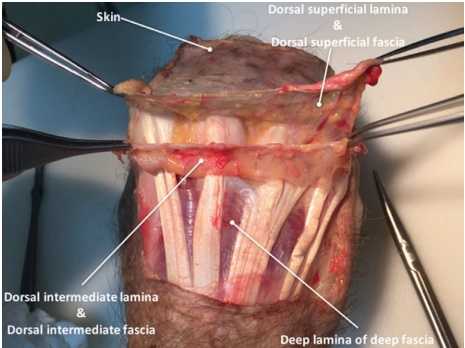
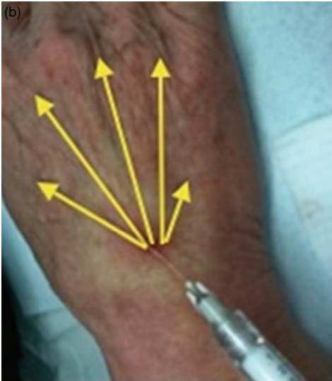
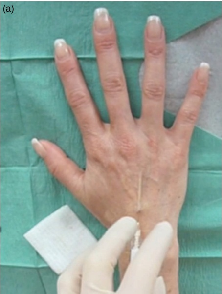
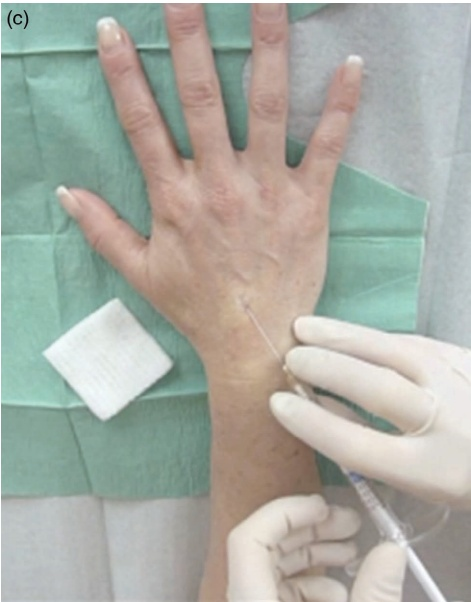
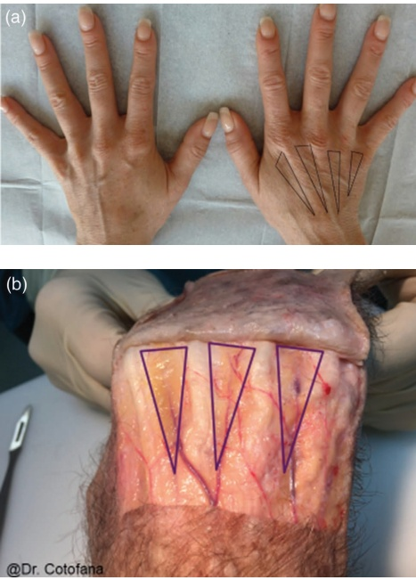
近期一项回顾性研究对 220 名个体进行了调查，考察了使用针头或钝性套管针以及选择的注射技术（团注、指节带状、近端至远端扇形、远端至近端单线）在 11 年内的安全性及治疗结果，该研究提供了关于使用 CaHA 进行手部增生的最佳方法的进一步信息 [12]。前两周内有 32 名个体（占手部总数的 7.3%）报告了不良事件，主要与肿胀、疼痛和红斑有关。与钝性套管针相比，使用锐针与不良事件的发生风险相关（OR 7.57，95% CI 3.76–15.24；P < 0.001），并且研究发现近端至远端扇形技术的不良事件发生比值最低（图 34.2–34.3）。
34.4 CaHA 手部钝性套管针注射技术
基于以上研究结果，作者提出了一种使用CaHA进行最佳手部年轻化的技术。该技术基于Lefebvre-Vilardebo等人[13]描述的皮肤刮除-牵引技术，但仅采用单个入点。
注射定位，参见图 34.4。
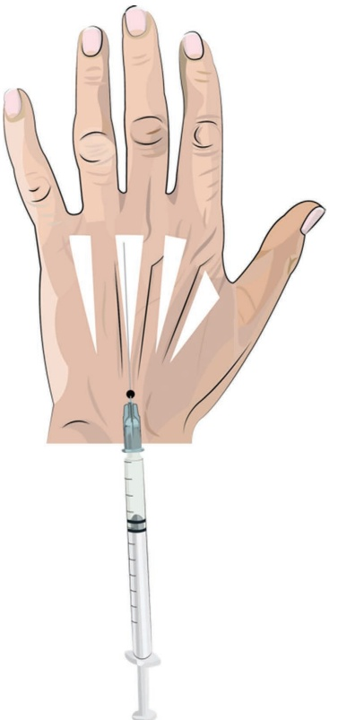
34.4.1 分步技术
-
手部在放置于手术台并铺设无菌纱布下方前进行清洁和消毒。
-
使用 21G 锐针，在皮下建立钝性套管针的插入点。对于敏感患者，可在该插入点局部麻醉，使用利多卡因和肾上腺素（1:200000）进行处理（图 34.5）。
-
从此单个入点，使用 22G 钝性、硬挺的 70 mm 钝性套管针，并采用近端至远端（朝向指尖）扇形技术，注入稀释了 1:1 的 CaHA 与生理盐水和利多卡因混合液（图 34.2）。每只手总共注射 1.5 mL（即 0.75 mL CaHA 体积）。
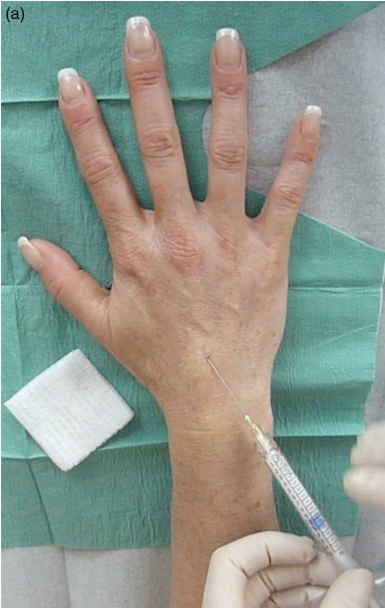
-
使刀口朝上，沿真皮底部刮进钝性套管针，如遇阻力则进行旋转。应避免提拉皮肤，因为这也会抬起所有下方的结构。
-
采用扇形技术，以逆行和顺行的方式在肌腱带之间成系列三角形区域注射羟基磷灰石钙（CaHA），使三角形的尖端位于近端，底座位于远端（见图34.3）。
-
然后轻柔按摩手部，以确保均匀分布。
34.5 手部注射锐针技术
有关注射定位，参见图34.6。
34.5.1 分步技术
-
在将手掌朝下放置于铺有干净布的器械台上前，清洁并消毒手部。
-
使用30G锐针和利多卡因加肾上腺素（1:200000）将皮肤从筋膜处分离。从背部的远端开始注射。
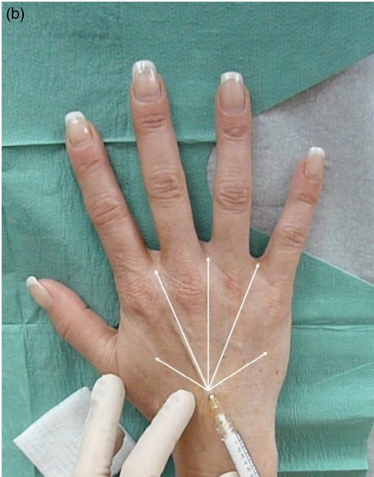
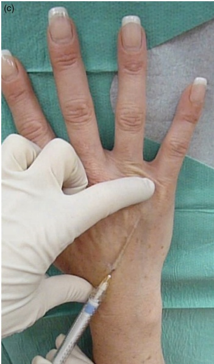
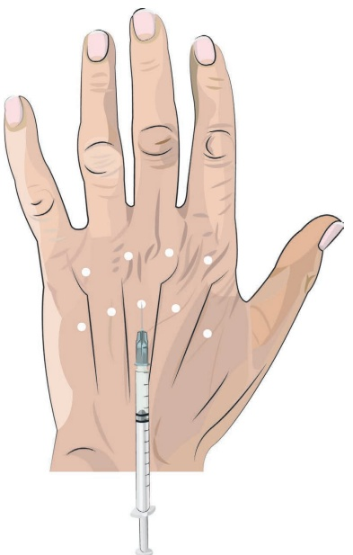
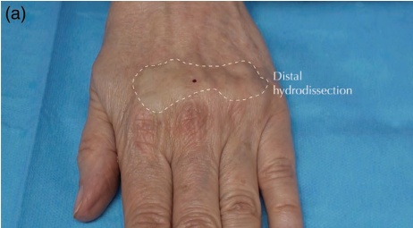
(图 34.7a) 手部和向上移动（图 34.7b）。
- 在进行游离剥离后，使用 27G、19 mm 的针头将稀释的 CaHA 与 0.9% NaCl 和利多卡因按 1:1 比例混合物注入新形成的间隙中（图 34.8）。
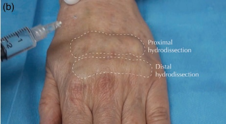
-
以逆行、扇形的方式放置少量 CaHA 团注。每只手注射总量为 1.5 mL（即 1.5 mL 体积，代表 0.75 mL CaHA）。
-
为确保产品均匀分布，沿近端方向轻柔按摩手部（图 34.9a）。可考虑添加抗生素软膏。
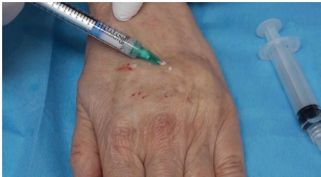
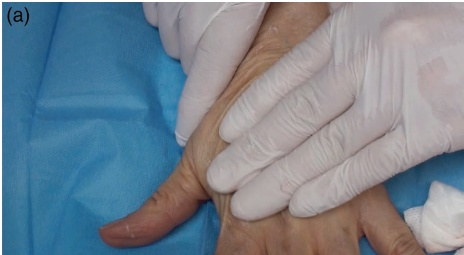
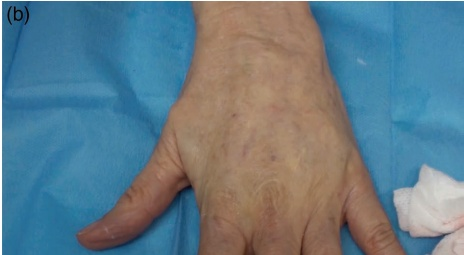
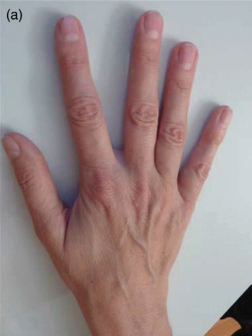
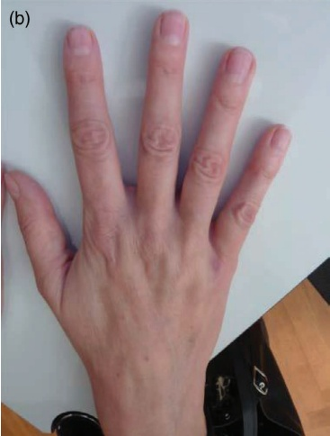
有关结果和应用技术，请参阅图 34.9b。
34.6 术后护理
不建议将 CaHA 注射到手指内，因为重复活动可能导致产品在指节处积聚并形成结节。建议在八周进行随访，以确定是否需要二次治疗。根据已发表的研究结果 [9,14]，大多数患者的良好效果可持续长达 12 个月。应告知患者术后避免园艺或洗碗等活动一周，以防止感染通过钝性套管针的插入点进入。
既往研究中报告的不良事件很少，持续时间短，主要包括瘀伤、红斑和水肿 [8,9,12,14,15]。使用从近端到远端的扇形技术（proximal-to-distal fanning technique）可以进一步降低这些事件的发生率。
参考文献
[1] R. D. Bains et al., “Hand aging: Patients’ opinions,” Plast Reconstr Surg, vol. 117, no. 7, pp. 2212–2218, 2006.
[2] A. L. Berlin et al., “Calcium hydroxylapatite filler for facial rejuvenation: A histologic and immunohistochemical analysis,” Dermatol Surg, vol. 34, no. Suppl 1, pp. S64–S67, 2008.
[3] K. M. Coleman et al., “Neocollagenesis after injection of calcium hydroxylapatite composition in a canine model,” Dermatol Surg, vol. 34, no. Suppl 1, Jun. 2008, https://doi.org/10.1111/J.1524-4725.2008.34243.X.
[4] E. S. Marmur et al., “Clinical, histologic and electron microscopic findings after injection of a calcium hydroxylapatite filler,” J Cosmet Laser Ther, vol. 6, no. 4, pp. 223–226, Dec. 2004, https://doi.org/10.1080/147641704100003048.
[5] Y. Yutskovskaya et al., “A randomized, split-face, histomorphologic study comparing a volumetric calcium hydroxylapatite and a hyaluronic acid-based dermal filler,” J Drugs Dermatol, vol. 13, no. 9, pp. 1047–1052, Sep. 2014 [Online], http://www.ncbi.nlm.nih.gov/pubmed/25226004 (accessed Nov. 7, 2024).
[6] Y. A. Yutskovskaya, E. A. Kogan, "Improved neocollagenesis and skin mechanical properties after injection of diluted calcium hydroxylapatite in the neck and décolletage: A pilot study," J Drugs Dermatol, vol. 16, no. 1, pp. 68–74, Jan. 2017 [Online], http://www.ncbi.nlm.nih.gov/pubmed/28095536 (accessed Nov. 7, 2024).
[7] H. Sundaram et al., “Comparison of the rheological properties of viscosity and elasticity in two categories of soft tissue fillers: Calcium hydroxylapatite and hyaluronic acid,” Dermatol Surg,
vol. 36, no. Suppl 3, pp. 1859–1865, Nov. 2010, https://doi.org/10.1111/J.1524-4725.2010.01743.X.
[8] M. Busso, R. Voigts, “An investigation of changes in physical properties of injectable calcium hydroxylapatite in a carrier gel when mixed with lidocaine and with lidocaine/epinephrine,” Dermatol Surg, vol. 34, no. Suppl 1, Jun. 2008, https://doi.org/10.1111/j.1524-4725.2008.34238.X.
[9] M. P. Goldman et al., “Calcium hydroxylapatite dermal filler for treatment of dorsal hand volume loss: Results from a 12-month, multi-center, randomized, blinded trial,” Dermatol Surg, vol. 44, no. 1, pp. 75–83, Jan. 2018, https://doi.org/10.1097/DSS.0000000000001203.
[10] J. L. Cohen et al., “A randomized, blinded study to validate the merz hand grading scale for use in live assessments,” Dermatol Surg, vol. 41, pp. S384–S388, Dec. 2015, https://doi.org/10.1097/DSS.0000000000000553.
[11] S. M. Bidic et al., “Dorsal hand anatomy relevant to volumetric rejuvenation,” Plast Reconstr Surg, vol. 126, no. 1, pp. 163–168, Jul. 2010, https://doi.org/10.1097/PRS.0B013E3181DA86EE.
[12] K. Frank et al., “The anatomy behind adverse events in hand volumizing procedures: Retrospective evaluations of 11 years of experience,” Plast Reconstr Surg, vol.141, no.5, pp.650e–662e, May 2018, https://doi.org/10.1097/PRS.0000000000004211.
[13] M. Lefebvre-Vilardebo et al., “Hand: Clinical anatomy and regional approaches with injectable fillers,” Plast Reconstr Surg, vol. 136, no. 5, pp. 258S–275S, 2015, https://doi.org/10.1097/PRS.00000000000001828.
[14] N. S. Sadick, “A 52-week study of safety and efficacy of calcium hydroxylapatite for rejuvenation of the aging hand,” J Drugs Dermatol, vol. 10, no. 1, pp. 47–51, Jan. 2011.
[15] G. F. Muti et al., “Calcium hydroxylapatite for augmentation of face and hands: A retrospective analysis in Italian subjects,” J Drugs Dermatol, vol. 14, no. 9, pp. 948–954, Sep. 2015 [Online], https://pubmed.ncbi.nlm.nih.gov/26355612/ (accessed Jan. 22, 2025).